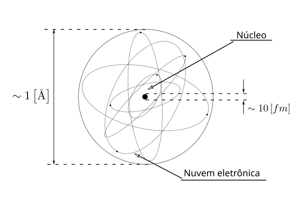
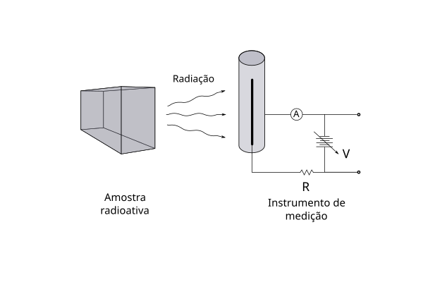

O núcleo atômico é formado por um conjunto de prótons e nêutrons, mantidos unidos por um potencial nuclear que garante a coesão do sistema. Ao redor desse núcleo, temos a eletrosfera. Juntos, o núcleo atômico e a nuvem eletrônica formam o átomo.
A Figura 1 apresenta uma representação do átomo segundo o modelo de Bohr1. É crucial notar as ordens de grandeza das dimensões envolvidas: o núcleo ocupa uma região minúscula no centro, com cerca de alguns femtômetros ( m), enquanto a eletrosfera domina o volume, ocupando uma região da ordem de alguns ángstrons ( m).

Figura 1: Representação esquemática do átomo.
Essa compreensão da estrutura nuclear começou com o histórico experimento conduzido por Ernest Rutherford e sua equipe no início do século XX. Esse foi o ponto de virada para entendermos a existência de um núcleo denso distinto da eletrosfera.
No experimento, um feixe de partículas alfa (núcleos de hélio) foi disparado contra uma finíssima folha de ouro. Pelo modelo atômico vigente na época, esperava-se que as partículas atravessassem a folha com pouca ou nenhuma deflexão.
Porém, os resultados foram surpreendentes: algumas partículas alfa sofreram desvios violentos em ângulos inesperados, e algumas poucas chegaram a ricochetear de volta para a origem. Essas observações levaram Rutherford a concluir que a estrutura do átomo era radicalmente diferente do proposto até então.
Com base nesses dados, ele propôs um modelo onde a maior parte da massa do átomo estaria concentrada em um núcleo central, pequeno, denso e carregado positivamente — o “alvo” onde as partículas alfa colidiram. Ele sugeriu que este núcleo contém os prótons, enquanto os elétrons estariam distribuídos na eletrosfera ao redor.
Essa descoberta revolucionou a física, aposentando o modelo de Thomson e pavimentando o caminho para a mecânica quântica — a ferramenta fundamental para descrever o comportamento detalhado dos átomos.
Vale um comentário curioso aqui: sistemas microscópicos como o núcleo devem ser analisados via formalismo quântico. No entanto, a análise clássica de colisão feita por Rutherford acabou sendo válida porque a proporcionalidade das forças se manteve. A ciência às vezes conta com esses “golpes de sorte”, onde teorias macroscópicas acabam herdando e conservando propriedades das microscópicas.
A Medição e a Energia
Neste ponto, é importante pensarmos no processo de medição, pois ele estará sempre implícito ao falarmos sobre átomos e radiações. É fato que o núcleo atômico e a maioria das radiações não podem ser vistos, no sentido mais coloquial do termo.
O leitor já sabe que as radiações corpusculares, carregadas ou não — como os prótons e nêutrons — ou as ondas eletromagnéticas — tais como os raios gama — podem ser emitidas por núcleos instáveis ou geradas por algum processo específico. Por simplicidade, pense em uma certa amostra radioativa emitindo uma quantidade de radiação.
O processo de medida pode ocorrer de várias formas; vamos considerar a mais intuitiva delas: a câmara de ionização. Para tanto, considere a idealização na Figura 2.
Nela, uma amostra radioativa é posicionada próxima a uma câmara que consiste em um tubo condutor contendo um gás e um ânodo interno. O arranjo é, essencialmente, um capacitor onde uma fonte de alta tensão é conectada para induzir um campo elétrico intenso entre os eletrodos.
Após a montagem do arranjo, a radiação emitida pela amostra atinge o gás. As colisões entre a radiação e os átomos do gás transferem energia e, eventualmente, o processo de ionização ocorrerá. Como resultado, teremos a formação de um par elétron-íon: o elétron seguirá na direção do campo até o ânodo, induzindo uma corrente elétrica que poderá ser medida. Tal medida, dadas as condições específicas, é proporcional à radiação emitida2.

Figura 2: Esquema idealizado do processo de medição com uma câmara de ionização.
Uma vez entendida a ideia do processo de medição, é oportuno introduzir a unidade de energia utilizada para radiações, a mais natural possível: o elétron-volt ().
Se um elétron estiver sujeito a um potencial elétrico, sua energia será o produto da carga pela diferença de potencial. O elétron-volt é definido, portanto, como a energia adquirida por um elétron sujeito ao potencial de 1 Volt, ou seja:
Note como essa é uma unidade natural ao se olhar para o processo de medição na câmara de ionização que acabamos de descrever.
Definições Nucleares Básicas
Voltando à estrutura atômica, podemos dividir o átomo em duas partes claras: a eletrosfera e o núcleo. No núcleo atômico estão encerrados os prótons e os nêutrons ligados, enquanto na eletrosfera encontram-se os elétrons.
O número de prótons presentes define a carga elétrica do núcleo e é caracterizado pelo número atômico (). Este, juntamente com o número de nêutrons (), forma o número de massa ():
O número de massa está associado à massa total do núcleo — descontado o potencial nuclear (a energia de ligação). O termo núcleon é usado para se referir genericamente aos componentes do núcleo, tanto os prótons quanto os nêutrons.
A carga do núcleo define a quantidade de elétrons presentes na eletrosfera de um átomo eletricamente neutro, que será , vide a Figura 3.
Figura 3: Esquema simbólico do átomo.
De forma geral, um átomo específico — tecnicamente chamado de nuclídeo — é definido pelo seu número de massa e pela sua carga (ou elemento químico). Escrevemos:
Onde representa sua espécie química, definida pela carga .
O número de massa está intimamente associado com a massa atômica. Esta é definida como a massa do átomo neutro relativa a 1/12 da massa do átomo de carbono-12 () neutro3.
Assim, para um determinado nuclídeo , sua massa relativa será:
Dentre os diversos nuclídeos existentes, é preciso categorizá-los. Chamamos de isótopos as espécies de um mesmo elemento químico; ou seja, são núcleos que possuem o mesmo número de prótons, mas diferem no número de nêutrons e, consequentemente, no número de massa.
O exemplo mais clássico são os isótopos do hidrogênio:
- Prótio (): 1 próton e 0 nêutrons ().
- Deutério (): 1 próton e 1 nêutron ().
- Trítio (): 1 próton e 2 nêutrons ().
Apesar de terem propriedades químicas semelhantes — afinal, a química é ditada pelo número atômico —, suas propriedades nucleares, como estabilidade e energia de ligação, variam substancialmente.
Existem ainda outras categorias de semelhança:
-
Isóbaros: São nuclídeos de diferentes elementos químicos que possuem o mesmo número de massa (), mas diferem no número de prótons e de nêutrons. O e o são exemplos.
-
Isótonos: São núcleos que possuem o mesmo número de nêutrons (), mas diferem no número de prótons e no número de massa. Um exemplo seria o par e (ambos com 7 nêutrons).
-
Isômeros nucleares: São núcleos que possuem o mesmo número de prótons e nêutrons — ou seja, são o mesmo isótopo — mas diferem no estado de energia interna. Dizemos que um isômero é um estado excitado do núcleo que pode se transmutar para um estado de energia mais baixa.
Um exemplo típico é o tecnécio-99m (), onde o índice "" indica o estado metaestável. Com uma meia-vida de 6 horas, ele é amplamente usado em exames médicos de imagem. Ele é um isômero do nuclídeo , que corresponde ao estado fundamental (de menor energia).
Abundância e Massa Atômica
Outra quantidade importante é a abundância isotópica. Ela representa a proporção relativa em que os isótopos de um elemento ocorrem na natureza.
Essa proporção é expressa como uma fração e indica a contribuição de cada isótopo para a composição total de um elemento em uma amostra.
-
Abundância relativa: É a fração de um isótopo em relação ao total de todos os isótopos do elemento.
-
Abundância natural: Refere-se especificamente à abundância encontrada em amostras naturais da Terra, podendo variar ligeiramente dependendo da origem geográfica ou geológica.
Como exemplo, o carbono possui dois isótopos estáveis na natureza: o Carbono-12 (), com abundância de , e o Carbono-13 (), com .
Isso nos leva ao conceito de massa atômica média. A massa que vemos na tabela periódica para um elemento é uma média ponderada das massas de seus isótopos, levando em conta suas abundâncias naturais ():
Para ilustrar, tome os dados dos isótopos naturais do ferro apresentados na Tabela 1.
| Isótopo | Massa M() [u] | Abundância |
|---|---|---|
Tabela 1: Massa e abundância natural dos isótopos do ferro.
Logo, o cálculo da massa de uma amostra de ferro natural será:
Uma pergunta natural surge aqui: como medir as características físicas, como o tamanho, de algo tão pequeno? Evidentemente, para medir sistemas desconhecidos, devemos sondá-los de alguma forma.
A estratégia básica da física nuclear é enviar um “portador de informação” conhecido contra o alvo e medir o efeito da interação. Para entender essa ideia, voltamos ao experimento de Rutherford. Nele, o portador de informação — no caso, as partículas alfa oriundas de uma fonte radioativa — é usado para sondar os átomos de uma amostra de ouro.
Observe a idealização na Figura 4(a). Nela está representada uma fonte de radiação alfa colocada dentro de uma blindagem, com um furo que age como colimador, direcionando o feixe. Esse feixe incide sobre a folha de ouro e as partículas são espalhadas em diversas direções. Para “ver” essas partículas, utilizamos um cintilador4 posicionado ao redor da amostra. É esse processo de detecção que traz consigo as informações sobre o sistema5.
Note que o processo de espalhamento no alvo de ouro ocorre átomo a átomo. A medida que observamos no final é, na verdade, a soma dos efeitos de todas essas colisões microscópicas, como ilustrado no detalhe (b) da Figura 4.
Figura 4: Processo de sondagem: (a) idealização da montagem do experimento de Rutherford; (b) visualização microscópica dos espalhamentos entre a radiação e os átomos da amostra; e (c) comportamento das partículas espalhadas em um dado ângulo em função da energia incidente das partículas.
Vamos considerar agora uma generalização moderna do experimento de Rutherford. Substituímos a fonte radioativa (que possui energia fixa) por um acelerador de partículas, o que nos permite variar a energia do feixe6.
A Figura 4(c) mostra o comportamento da probabilidade de se medir a partícula em um dado ângulo em função da energia do feixe. As curvas tracejadas indicam o comportamento esperado pela física clássica (apenas repulsão coulombiana), semelhante ao experimento original. Porém, a partir de um determinado ponto, o comportamento muda drasticamente e outra informação vem à tona.
Isso acontece porque, para uma energia suficientemente alta, a partícula do feixe consegue vencer a barreira de repulsão elétrica e penetrar o potencial nuclear, onde uma reação de absorção ocorre. É justamente esse “ponto de quebra” no gráfico que nos traz informações sobre o limite físico do núcleo, ou seja, o raio nuclear.
O Raio Nuclear
O raio nuclear é uma medida aproximada do tamanho do núcleo. Embora o núcleo não tenha uma borda rígida como uma bola de bilhar, o raio define a região onde a densidade de núcleons é significativa.
Como exemplo de escala:
- Para o hélio (), o raio é da ordem de .
- Para o urânio (), o raio chega a .
A experiência evidencia que o volume ocupado pelo núcleo é proporcional ao número de massa (). Se assumirmos que o núcleo é esférico, obtemos a proporção 7. Assim, o raio nuclear pode ser estimado pela fórmula empírica:
Onde a constante de proporcionalidade é de aproximadamente .
Note que os núcleons estão encerrados dentro de volumes diminutos, o que implica que as densidades nucleares são astronomicamente altas. Para entender a estabilidade desses sistemas e como eles não se desfazem, será conveniente introduzir o conceito de energia de ligação, mas não antes de passarmos pela equivalência entre massa e energia.
Footnotes
-
Segundo o modelo proposto por Niels Bohr, o átomo é tal como um sistema planetário em miniatura, onde os elétrons orbitam em órbitas circulares ao redor do núcleo. Essas órbitas estão quantizadas, o que significa que os elétrons só podem ocupar certos níveis de energia específicos. O modelo de Bohr forneceu uma explicação inicial para o comportamento dos elétrons, especialmente em átomos com um único elétron, como o hidrogênio. No entanto, a visão de Bohr era limitada em sua descrição completa do comportamento dos elétrons e da estrutura do átomo. A mecânica quântica, baseada no formalismo da função de onda, foi desenvolvida posteriormente para superar essas limitações. De acordo com a mecânica quântica, os elétrons não são considerados como partículas pontuais com órbitas bem definidas, mas sim como ondas de probabilidade que descrevem sua distribuição espacial. A função de onda é relacionada com a probabilidade de encontrar um elétron em uma determinada posição e em um determinado momento no espaço - isso nos dá a visão alternativa de nuvens eletrônicas substituindo o conceito de órbita e dando o lugar a essa região associada uma probabilidade especifica, os orbitais. Ela fornece informações sobre a distribuição eletrônica nos diferentes níveis de energia e orbitais atômicos. A mecânica quântica permite uma descrição mais precisa dos fenômenos atômicos e moleculares, levando em conta os efeitos de interferência, superposição e entrelaçamento quântico. A diferença fundamental entre a visão do átomo de Bohr e o formalismo da função de onda é que o modelo de Bohr descreve os elétrons como partículas orbitando em órbitas quantizadas, enquanto a mecânica quântica descreve os elétrons como ondas de probabilidade descritas por funções de onda. ↩
-
Para mais informações sobre os processos de medição, calibração, entre outros vide: TSOULFANIDIS, Nicholas; LANDSBERGER, Sheldon. Measurement and detection of radiation. CRC press, 2021. Ou: KNOLL, Glenn F. Radiation detection and measurement. John & Wiley Sons Inc, 2010. ↩
-
Isso também define a unidade de massa atômica unificada: . ↩
-
Um cintilador consiste, em linhas gerais, em um material que transduz a energia da radiação incidente (como partículas alfa, beta, gama ou raios X) em pulsos de luz visível ou ultravioleta. O processo ocorre em dois atos: primeiro, a interação, onde a radiação transfere energia ao material, excitando elétrons; segundo, a relaxação, onde esses elétrons retornam ao estado fundamental emitindo fótons (luz). Essa luz é então convertida em sinal elétrico por fotomultiplicadoras. Exemplos incluem o NaI(Tl) para raios gama e o antraceno para partículas carregadas. ↩
-
Em seus primeiros experimentos, Rutherford e colaboradores utilizaram uma fonte de (“radium C”) que decai gerando . Este, por sua vez, emite uma partícula alfa de alta energia () quase instantaneamente. O alvo era uma folha de ouro de apenas de espessura. ↩
-
Veja, por exemplo: BLAIR, J. S. Theory of elastic scattering of alpha particles by heavy nuclei. Physical Review, v. 95, n. 5, 1954; ou FARWELL, G. W.; WEGNER, H. E. Elastic scattering of intermediate-energy alpha particles by heavy nuclei. Physical Review, v. 95, n. 5, 1954. ↩
-
Detalhes históricos e teóricos podem ser vistos em: FERMI, Enrico. Nuclear physics. University of Chicago press, 1950; BETHE, H. A.; BACHER, R. F. Reviews of Modern Physics, v. 8, n. 2, 1936. E o clássico: RUTHERFORD, E. Philosophical Magazine, v. 92, 2012 (reprint). ↩